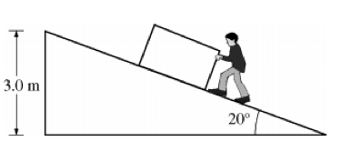

A box is being pushed at constant speed up an inclined plane to a vertical height of 3.0 m above the ground, as shown in the figure above. The person exerts a force parallel to the plane. The mass m of the box is 50 kg, and the coefficient of kinetic friction μk between the box and the plane is 0.30.
a) What are the forces acting on the box?
b) Calculate the friction force between the plane and the box.
c) Calculate the work done by the person pushing the box, assuming the box is raised to the vertical height of 3.0 m.